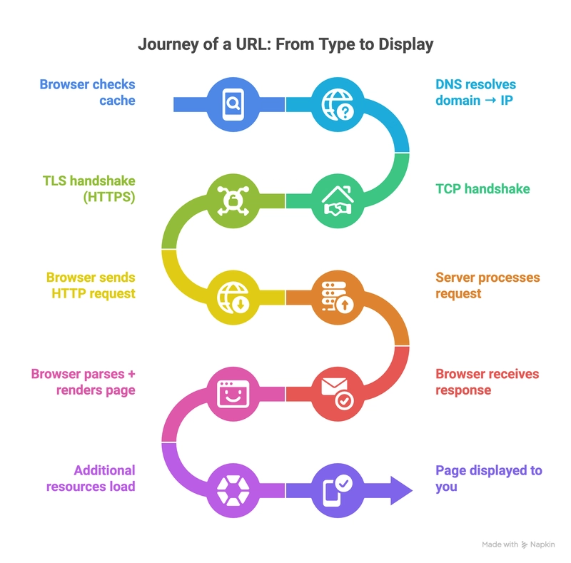

Understanding what is URL LifeCycle ???
Published on
By Umesh

URL Lifecycle is the process of how a URL is created, used, and eventually retired. It involves several stages, including creation, activation, usage, and deactivation. Understanding the URL lifecycle is crucial for web developers and digital marketers to ensure that URLs are managed effectively and remain functional throughout their intended lifespan.
What Happens when you Enter an URL ??
There are several steps that happen when you enter a URL in the browser.
- DNS Lookup
- TCP Connection
- HTTP Request
- Server Processing
- HTTP Response
- Rendering
What Happens When You Enter a URL?
Several steps take place between entering a URL and seeing the final webpage in your browser.
1. The Browser Reads the URL
The browser first determines the protocol, domain name, and requested resource from the URL.
2. The Browser Finds the Server
The domain name is resolved to an IP address using the Domain Name System, commonly called DNS.
3. The Browser Sends a Request
Once the server is located, the browser sends an HTTP request asking for the required resource.
How Does the Server Respond?
The server receives the request, processes it, and generates an HTTP response.
HTTP Response
The response normally contains a status code, headers, and a response body containing the requested content.
For example, a successful request commonly returns the HTTP status code 200 OK.
Tutorial Video Showing What Happens When You Enter a URL
Watch the tutorial on YouTube: How the Web Works